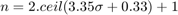
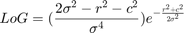
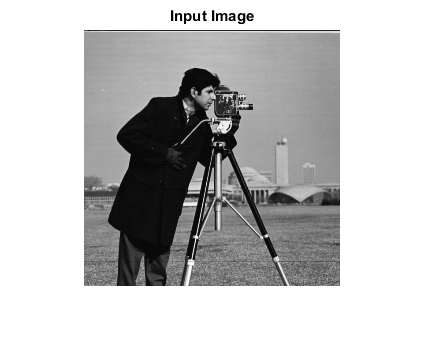
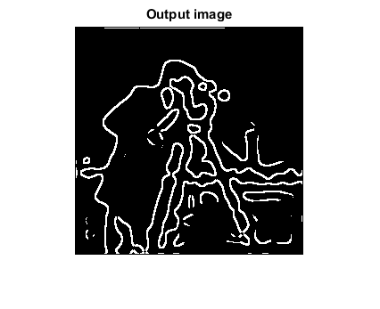

MARR_HILDRETH_ED_CVIP
marr_hildreth_ed_cvip() -performs a Marr Hildreth edge detection on the image.
Contents
SYNTAX
out = marr_hildreth_ed_cvip( input_image, sigma, threshold )
Input Parameters include :
- input_image - Input image can be gray image or rgb image of MxN size.
- sigma - The Gaussian variance.
- threshold - The threshold tested against the absolute value of the difference between the two pixels that have the sign changes.
Output Parameter include :
- out_img - The output image after edge detection. An image with the same size as the input image.
DESCRIPTION
Marr-Hildreth algorithm is one of the advanced edge detection algorithms which have multiple steps. First the image is convolved with a Gaussian smoothing filter. Then the result is convolved by a Laplacian mask. And finally the zero crossings are found which will create the output image.
Convolving with a Gaussiang and then a Laplacian can be shortened to one step which is convolving with an LoG mask. The formula to determine the size of the filter based on the Gaussian variance is as follow:

and the LoG filter in that window is computed by the following formula. The center of the window corresponds to r=c=0:

After filtering, zero crossings in the results are found and iterpreted as the edges in the output image.
REFERENCE
1. Scott E Umbaugh. DIGITAL IMAGE PROCESSING AND ANALYSIS: Applications with MATLAB and CVIPtools, 3rd Edition.
EXAMPLE
% Read images input_image = imread('cam.bmp'); % sigma sigma = 5; % Threshold threshold =.2; % Calling function out = marr_hildreth_ed_cvip( input_image, sigma, threshold ); % Display input image figure;imshow(input_image);title('Input Image'); % Display output image figure; imshow(remap_cvip(out));title('Output image'); 
CREDITS
Author: Mehrdad Alvandipour, April 2017
Copyright © 2017-2018 Scott
E Umbaugh
For updates visit CVIP Toolbox Website